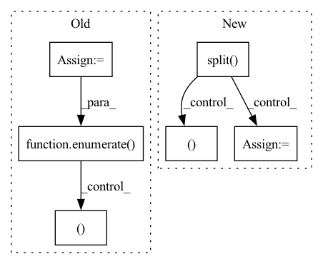

Pattern ID :42054
Before Change
X = torch.linspace(-1, 1, resolution).split(S)
Y = torch.linspace(-1, 1, resolution).split(S)
Z = torch.linspace(-1, 1, resolution).split(S)
count = torch.zeros_like(self.density_grid)
poses = poses.to(count.device)
// 5-level loop, forgive me...
for xi, xs in enumerate(X):
for yi, ys in enumerate(Y):
for zi, zs in enumerate( Z) :
lx, ly, lz = len(xs), len(ys), len(zs)
// construct points
xx, yy, zz = custom_meshgrid(xs, ys, zs)
world_xyzs = torch.cat([xx.reshape(-1, 1), yy.reshape(-1, 1), zz.reshape(-1, 1)], dim=-1).unsqueeze(0).to(count.device) // [1, N, 3]After Change
fx, fy, cx, cy = intrinsic
X = torch.arange(self.grid_size, dtype=torch.int32, device=self.density_grid.device).split( S)
Y = torch.arange(self.grid_size, dtype=torch.int32, device=self.density_grid.device).split(S)
Z = torch.arange(self.grid_size, dtype=torch.int32, device=self.density_grid.device).split(S)
count = torch.zeros_like(self.density_grid)
poses = poses.to(count.device)
// 5-level loop, forgive me...
for xs in X:
for ys in Y:
for zs in Z:
// construct points
xx, yy, zz = custom_meshgrid(xs, ys, zs)
coords = torch.cat([xx.reshape(-1, 1), yy.reshape(-1, 1), zz.reshape(-1, 1)], dim=-1) // [N, 3], in [0, 128)
indices = raymarching.morton3D(coords).long() // [N]
world_xyzs = (2 * coords.float() / (self.grid_size - 1) - 1).unsqueeze(0) // [1, N, 3] in [-1, 1]
// cascading
for cas in range(self.cascade):
bound = min(2 ** cas, self.bound)
half_grid_size = bound / self.grid_size
// scale to current cascade"s resolution
cas_world_xyzs = world_xyzs * (bound - half_grid_size)
// split batch to avoid OOM
head = 0
while head < B:
tail = min(head + S, B)
// world2cam transform (poses is c2w, so we need to transpose it. Another transpose is needed for batched matmul, so the final form is without transpose.)
cam_xyzs = cas_world_xyzs - poses[head:tail, :3, 3].unsqueeze(1)
cam_xyzs = cam_xyzs @ poses[head:tail, :3, :3] // [S, N, 3]
// query if point is covered by any camera
mask_z = cam_xyzs[:, :, 2] > 0 // [S, N]
mask_x = torch.abs(cam_xyzs[:, :, 0]) < cx / fx * cam_xyzs[:, :, 2] + half_grid_size * 2
mask_y = torch.abs(cam_xyzs[:, :, 1]) < cy / fy * cam_xyzs[:, :, 2] + half_grid_size * 2
mask = (mask_z & mask_x & mask_y).sum(0).reshape(-1) // [N]
// update count
count[cas, indices ] += mask
head += S
// mark untrained grid as -1In pattern: SUPERPATTERN
Frequency: 3
Non-data size: 6
Instances Fragment ID: 117762885
Project Name: ashawkey/torch-ngp
Commit Name: f02ec4824ef16a650c5a4acac510ec6c224a4337
Time: 2022-06-02
Author: ashawkey1999@gmail.com
File Name: nerf/renderer.py
M Class Name: NeRFRenderer
N Class Name: NeRFRenderer
M Method Name: mark_untrained_grid(4)
N Method Name: mark_untrained_grid(4)
M Parent Class: nn.Module
N Parent Class: nn.Module
M File Name: nerf/renderer.py
N File Name: nerf/renderer.py
M Start Line: 397
M End Line: 438
N Start Line: 397
N End Line: 439
Before Change
elif self.config.name in ["SLR83"]:
for i, path_to_index in enumerate(path_to_indexs):
with open(path_to_index, encoding="utf-8") as f:
lines = f.readlines()
for id_, line in enumerate( lines) :
field_values = re.split(r",\s?", line.strip())
user_id, filename, sentence = field_values
path = os.path.join(path_to_datas[i], f"{filename}.wav")
counter += 1
yield counter, {"path": path, "audio": path, "sentence": sentence}After Change
// Following regexs are needed to normalise the lines, since the datasets
// are not always consistent and have bugs:
line = re.sub(r"\t[^\t]*\t", "\t", line.strip())
field_values = re.split( r"\t\t?", line)
if len(field_values) != 2:
continue
filename, sentence = field_values
// set absolute path for audio file
path = f"{path_to_data}/{filename}.wav"
sentences[path] = sentence
for path, f in files:
if path.startswith(path_to_data): Fragment ID: 117762881
Project Name: huggingface/datasets
Commit Name: 0534a87f60fb9a589138f0773e057c2429f482b7
Time: 2021-11-19
Author: 42851186+lhoestq@users.noreply.github.com
File Name: datasets/openslr/openslr.py
M Class Name: OpenSlr
N Class Name: OpenSlr
M Method Name: _generate_examples(4)
N Method Name: _generate_examples(3)
M Parent Class: datasets.GeneratorBasedBuilder
N Parent Class: datasets.GeneratorBasedBuilder
M File Name: datasets/openslr/openslr.py
N File Name: datasets/openslr/openslr.py
M Start Line: 625
M End Line: 652
N Start Line: 583
N End Line: 624
Before Change
X = torch.linspace(-1, 1, resolution).split(S)
Y = torch.linspace(-1, 1, resolution).split(S)
Z = torch.linspace(-1, 1, resolution).split(S)
for xi, xs in enumerate(X):
for yi, ys in enumerate(Y):
for zi, zs in enumerate( Z) :
lx, ly, lz = len(xs), len(ys), len(zs)
// construct points
xx, yy, zz = custom_meshgrid(xs, ys, zs)
xyzs = torch.cat([xx.reshape(-1, 1), yy.reshape(-1, 1), zz.reshape(-1, 1)], dim=-1) // [N, 3], in [-1, 1]After Change
tmp_grid = torch.zeros_like(self.density_grid)
X = torch.arange(self.grid_size, dtype=torch.int32, device=self.density_grid.device).split( S)
Y = torch.arange(self.grid_size, dtype=torch.int32, device=self.density_grid.device).split(S)
Z = torch.arange(self.grid_size, dtype=torch.int32, device=self.density_grid.device).split(S)
for xs in X:
for ys in Y:
for zs in Z:
// construct points
xx, yy, zz = custom_meshgrid(xs, ys, zs)
coords = torch.cat([xx.reshape(-1, 1), yy.reshape(-1, 1), zz.reshape(-1, 1)], dim=-1) // [N, 3], in [0, 128)
indices = raymarching.morton3D(coords).long() // [N]
xyzs = 2 * coords.float() / (self.grid_size - 1) - 1 // [N, 3] in [-1, 1]
// cascading
for cas in range(self.cascade):
bound = min(2 ** cas, self.bound)
half_grid_size = bound / self.grid_size
// scale to current cascade"s resolution
cas_xyzs = xyzs * (bound - half_grid_size)
// add noise in [-hgs, hgs]
cas_xyzs += (torch.rand_like(cas_xyzs) * 2 - 1) * half_grid_size
// query density
sigmas = self.density(cas_xyzs)["sigma"].reshape(-1).detach()
// from `scalbnf(MIN_CONE_STEPSIZE(), 0)`, check `splat_grid_samples_nerf_max_nearest_neighbor`
// scale == 2 * sqrt(3) / 1024
sigmas *= self.density_scale * 0.003383
// assign
tmp_grid[cas, indices ] = sigmas
// ema update Fragment ID: 117762888
Project Name: ashawkey/torch-ngp
Commit Name: f02ec4824ef16a650c5a4acac510ec6c224a4337
Time: 2022-06-02
Author: ashawkey1999@gmail.com
File Name: nerf/renderer.py
M Class Name: NeRFRenderer
N Class Name: NeRFRenderer
M Method Name: update_extra_state(3)
N Method Name: update_extra_state(3)
M Parent Class: nn.Module
N Parent Class: nn.Module
M File Name: nerf/renderer.py
N File Name: nerf/renderer.py
M Start Line: 454
M End Line: 488
N Start Line: 461
N End Line: 490